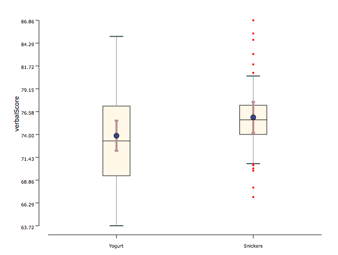
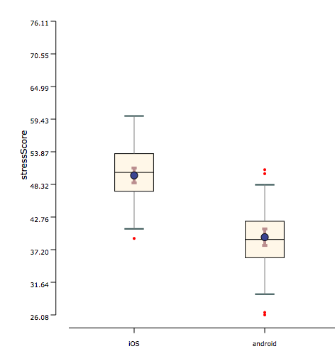

Wilcoxon signed-rank test is used when 2 conditions are compared and they are paired (i.e., within-groups factor). It is an alternative test for paired t-test. It is used when the distributions are not normal. It still requires the homogeneity of variances to hold (i.e., the distributions should have equal variance).
Conditions:
- Within-subjects experimental design
- The number of Independent Variable is one
- The number of levels in Independent Variable are two
- Your dependent variable should be measured at the ordinal or continuous level
- The distribution of the differences between the two related groups needs to be symmetrical in shape.
Examples:
Example 1: Example 2:In an effect of food on test scores user study, two types of food items(Yogurt and Snickers) were compared in a within-subjects experimental design. As shown in the graph below, the measured verbal score was normally distributed in each condition, but they are sampled from same participants hence violating the assumption of independence.Their variance is about the same.

Example 2: In an effect of phone operating systems emotionally on users, two types of phone operating systems(ios and android) were compared in a within-subjects experimental design. As shown in the graph below, the measured stress score was normally distributed in each condition, but they are sampled from same participants hence violating the assumption of independence condition.
